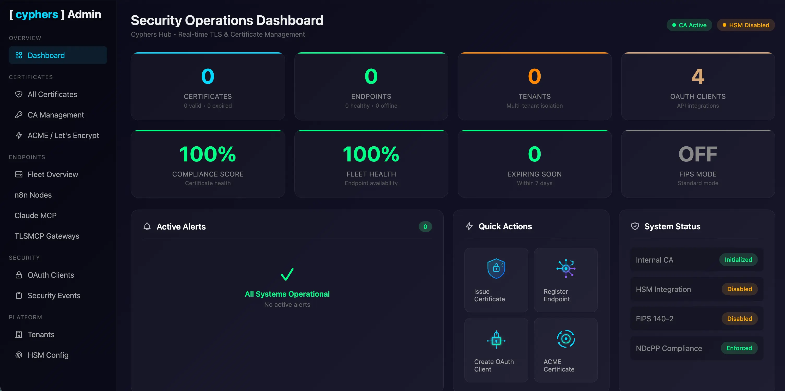

Enable mTLS
Remove Certificate Chaos
TLSMCP enables mutual TLS (mTLS) and automates certificate lifecycle for server and client identities - removing renewal risk, revocation gaps, and the operational overhead that makes short-lived certificates difficult to deploy.
If You Can't Authenticate at the Network Layer, You Can't Even Connect
Application-layer security assumes the connection is already trusted. But without identity enforcement at the transport layer, any machine can connect — and anything connected can talk.
mTLS solves this by requiring both sides of a connection to prove their identity before a single byte of data is exchanged. No certificate, no connection. That's the baseline everything else depends on.
TLSMCP makes that baseline achievable — for both the server certificates you already manage and the client certificates you've been avoiding.
Connection established. No identity check.
Both sides prove identity. Then data flows.
Certificate Management Is Broken
at Both Ends
Whether you're renewing server certificates or trying to enable mTLS with client certs, the operational pain is the same: manual, fragile, and unscalable.
Server Certificates
The renewal treadmill
-
Let's Encrypt renewals break silently
Cron jobs fail, DNS validation lapses, certbot configs drift. You find out when the site goes down, not before.
-
Multi-service renewal is fragile
Each service has its own renewal flow, its own config, its own failure mode. Consistency across environments is a myth.
-
No visibility into cert health
Which certs expire this week? Which services are still on TLS 1.2? Nobody knows until something breaks.
Client Certificates & mTLS
The deployment wall
-
Client certs don't scale
Issuing client certificates means tickets, manual signing, and tracking expiry across dozens of services. It becomes a management nightmare fast.
-
No revocation path
When a key is compromised, revoking it cleanly is either impossible or requires a full redeployment. Most teams have no consistent revocation story.
-
PKI is a full-time job
Standing up internal PKI requires specialized expertise most teams don't have and can't hire for.
TLSMCP solves both.
Enable mTLS
Without the Nightmare
Issue unlimited client certificates with any duration — from hours to months. TLSMCP handles issuance, distribution, rotation, and revocation for every client cert, so enabling mTLS is finally as easy as everyone claims it should be.
-
Unlimited client certs, any duration
Issue as many client certificates as you need — 1 hour, 7 days, 90 days. No per-cert fees, no approval queues.
-
Self-service that actually scales
Teams issue their own client certs without tickets or PKI expertise. The lifecycle is fully automated — rotation, renewal, revocation, all handled.
-
Instant revocation
Compromised key? Revoke any client cert immediately — no redeployment, no ambiguity, no grace period.
→ Issuing client certificate...
→ Configuring mTLS enforcement...
→ Setting rotation policy (24h)...
✓ mTLS enforced in 12 seconds
$ tlsmcp certs issue --type client \
--duration 7d --service svc-worker-04
→ Issuing client cert (7d lifetime)...
✓ Client cert issued & distributed
$ tlsmcp status
Endpoints: 3 verified
Client certs: 12 active (auto-rotating)
TLS version: 1.3 (enforced)
[cyphers] Score: 98/100
→ Checking 8 server certificates...
→ api-gateway: 23d remaining (ok)
→ auth-service: 2d remaining
→ Renewing with Let's Encrypt...
✓ Renewed (90d lifetime)
→ data-pipeline: 41d remaining (ok)
→ webhook-ingress: 5d remaining
→ Renewing with internal CA...
✓ Renewed (365d lifetime)
✓ All server certs healthy
Next auto-check: 6 hours
Never Think About
Server Cert Renewals Again
Whether you're running Let's Encrypt, an internal CA, or a commercial provider — TLSMCP automates the full server certificate lifecycle. Issue, renew, rotate, and revoke across every service from a single control plane.
-
Automated renewal — any provider
TLSMCP renews server certs before they expire, regardless of CA. No cron jobs, no certbot configs, no silent failures.
-
Consistent across all services
One renewal policy, one rotation flow, one place to monitor — whether you have 3 services or 300.
-
Zero-downtime rotation
New certs are deployed and activated before old ones expire. No restart. No gap. No 3am pages.
Understand. Fix.
Improve.
Your score is just the starting point.
Cyphers Hub turns TLS and mTLS configuration into actionable visibility — breaking down certificate weaknesses, lifecycle risks, and policy gaps across your services.
Breakdown
See exactly which TLS settings, certificate lifetimes, or revocation gaps are lowering your posture.
Mitigate
Get clear, actionable steps to enforce TLS 1.3, enable mTLS, and automate certificate rotation.
Rescan
Verify improvements instantly and watch your security posture rise.
Score 85+ and earn your Cyphers-Approved CheckMark.
Security at the Speed of AI
Server certs and client certs, managed together — with automated lifecycle and hardened transport policy built in.
Verify Every Connection
Convert encrypted endpoints into verified endpoints. Every machine proves its identity at the connection boundary.
- Mutual TLS enforcement
- Approved-client allowlisting
- Connection-level identity checks
Issue Your Own Certs — Client & Server
Issue unlimited client and server certificates with any duration you need — from hours to months. TLSMCP handles the full lifecycle for both, so it never becomes a management nightmare.
- Unlimited client & server cert issuance
- Any duration — hours, days, or months
- Self-service without the overhead
- Automatic rotation & revocation for both
Enforce TLS 1.3 Everywhere
Hardened transport policy with no fallback. Legacy negotiation is blocked by default, not by convention.
- TLS 1.3 only — no downgrades
- Cipher suite restrictions
- Policy-as-code configuration
Measure Your Machine Identity Posture
Identity becomes operationally visible through the Cyphers Hub control plane. See which systems are hardened and which aren't — at a glance.
Three Commands. Full Coverage.
Start with a single service. Expand when you're ready. No infrastructure overhaul required.
Point at Your Service
Run tlsmcp init against any TCP endpoint. TLSMCP deploys as a sidecar proxy — no code changes.
Certificates Auto-Issue
Short-lived TLS certs are generated, distributed, and rotated automatically. You set the policy; TLSMCP handles the lifecycle.
Monitor in Cyphers Hub
The Cyphers Hub control plane shows identity coverage, cert health, and your [cyphers] Score across every connected service in real time.
Built for High-Assurance Environments
Designed for regulated, security-critical systems where compliance isn't optional.
FIPS-Aligned Crypto
Cryptographic operations aligned with FIPS 140-2 standards
Strict Revocation
Immediate revocation with no grace period ambiguity
On-Prem & Air-Gapped
Runs fully on-premise with no external dependencies
SIEM Export
Stream identity events to your existing SIEM pipeline
Multi-Tenant
Isolated tenants with independent governance policies
Network Isolation
Segment enforcement boundaries per environment
What TLSMCP Secures
Identity enforcement is foundational — not a replacement for application security.
TLSMCP Handles
- Machine-to-machine identity verification
- Client & server certificate lifecycle automation
- Transport-layer policy enforcement
- Identity posture monitoring & scoring
Out of Scope
- Application-layer security (OWASP)
- User authentication & authorization
- Data encryption at rest
- Network firewall or WAF rules
Frequently Asked Questions
No. TLSMCP runs as a lightweight sidecar proxy alongside any TCP service. It works on bare metal, VMs, containers, or cloud instances — no orchestration required.
Default lifetime is 24 hours with automatic rotation. You can configure lifetimes from 1 hour to 90 days depending on your security policy and operational requirements.
Yes. TLSMCP is designed for incremental adoption. Secure one service, validate the workflow, then expand coverage at your own pace.
You issue both client and server certificates directly through TLSMCP — unlimited, with any duration from 1 hour to 90 days. Certificates are automatically distributed, rotated before expiry, and revoked instantly when needed. The full lifecycle is managed for both certificate types. No tickets, no manual signing, no spreadsheet tracking.
No. TLSMCP can integrate with your existing CA infrastructure or operate with its own internal CA. It adds lifecycle automation on top — it doesn't require ripping out what you already have.
The [cyphers] Score is a composite rating (0–100) that measures your machine identity posture across four dimensions: TLS policy enforcement, certificate strength, revocation configuration, and lifecycle hygiene. You can check your score at any time.
Secure Your First Service
in Under a Minute
No credit card. No procurement cycle. Deploy TLSMCP on a single endpoint and see verified machine identity in action.
One Platform. Three Products.
Every Connection Secured.
TLSMCP is part of the [cyphers] security infrastructure for automation workflows. From prototype to production, Vibe to Viable.